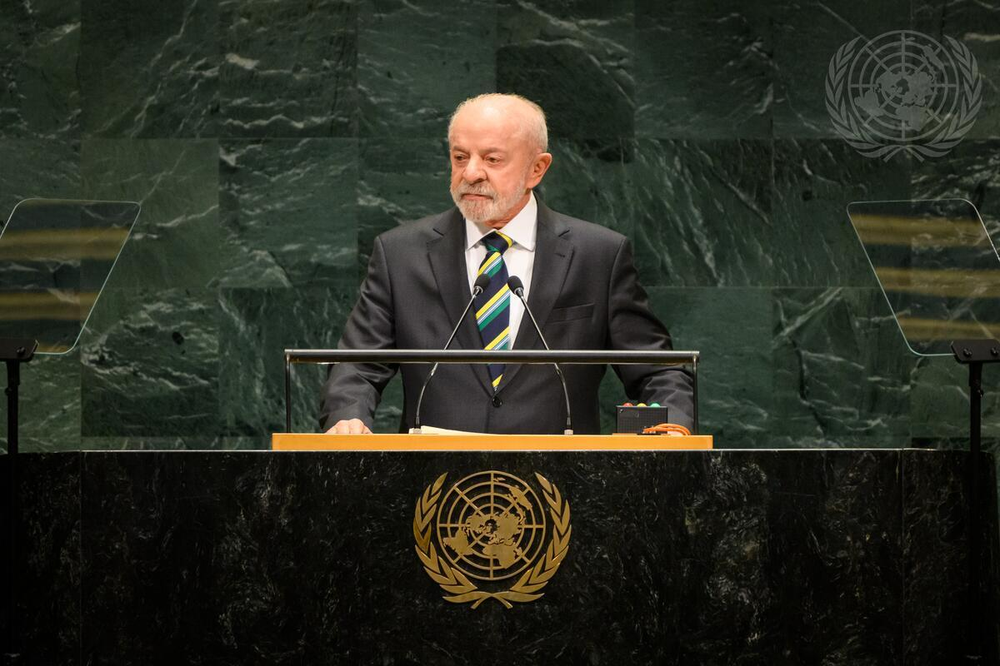
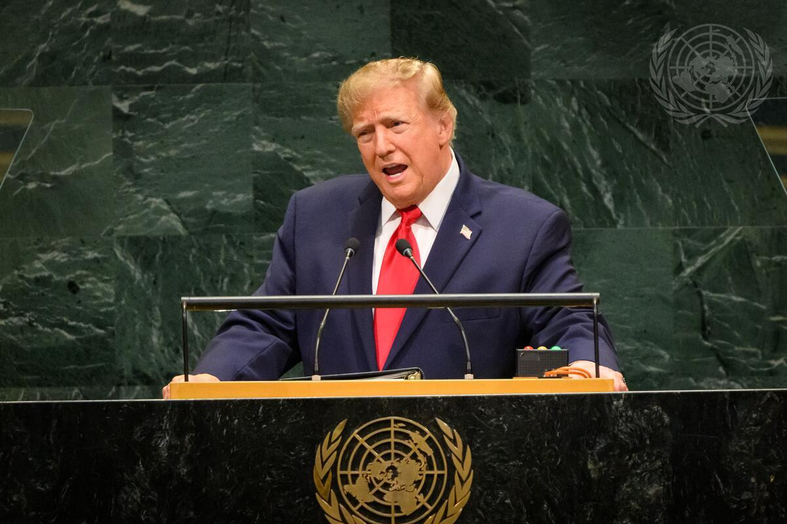
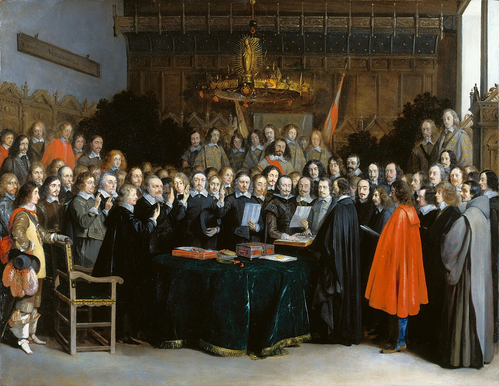
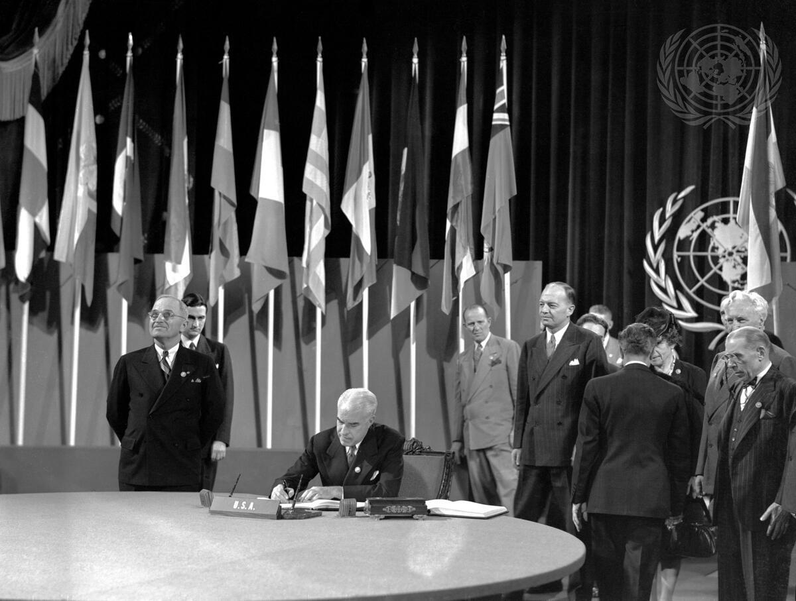
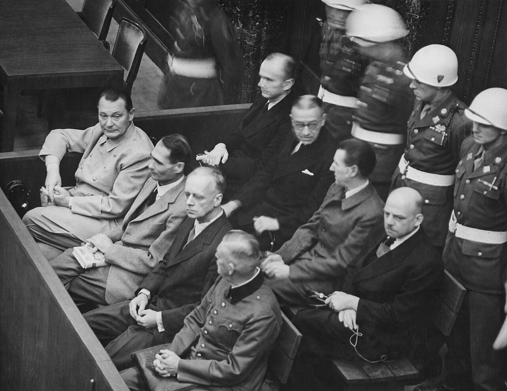
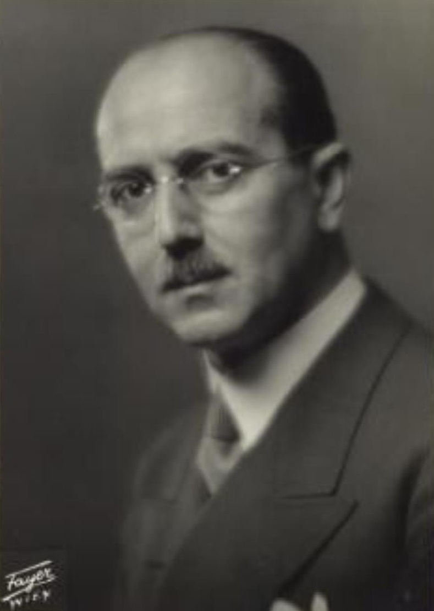
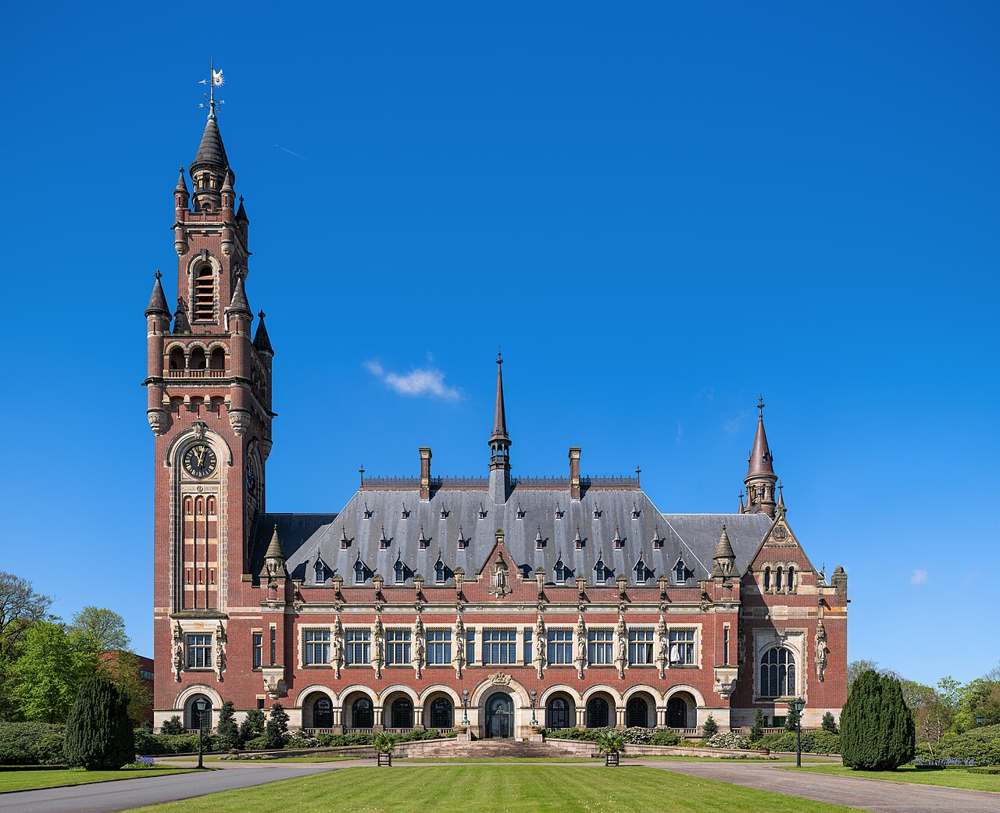
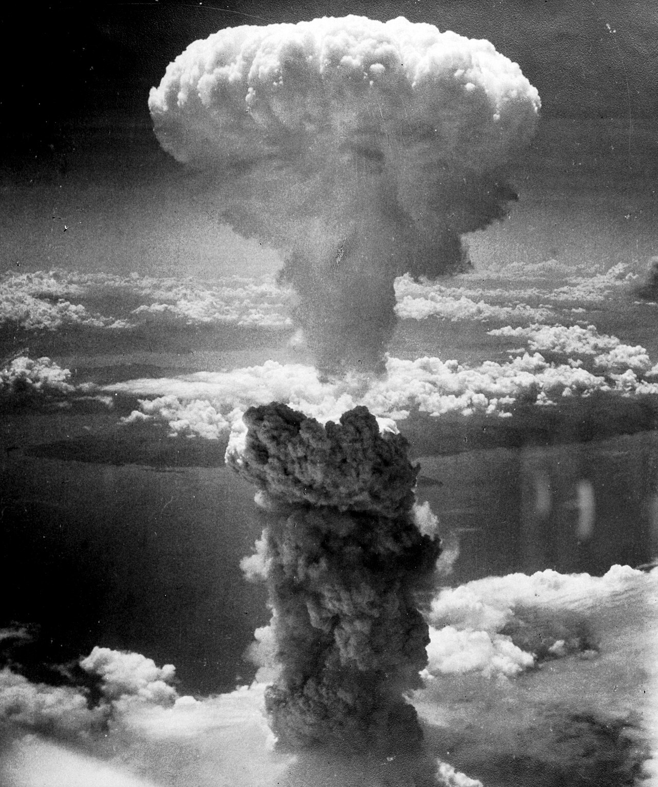

ENCIF 2026 · UniFamec · Oficina · 22 de outubro de 2026
Quem faz as regras do mundo?
Soberania, multilateralismo e a corrida da inteligência artificial.
* Material elaborado com apoio de Inteligência Artificial Generativa — Claude (Anthropic) — para estruturação das lâminas, esquemas visuais e sínteses. Seleção do conteúdo, conferência de fontes e responsabilidade integral do professor (Portaria CNPq nº 2.664/2026).
Prof. Mario Bastos — Sala 6A, Módulo A — 20h às 21h45.
Abertura · o caminho da noitealvo 20:03
Uma conversa em cinco partes
O que vamos ver hoje
1
Um mundo sem governo: que direito existe entre os países?
2
A ordem de 1945: a ONU por dentro.
3
Como uma regra internacional obriga.
4
A crise: multilateralismo × unilateralismo.
5
A corrida da IA: um direito ainda por fazer.
Nos 15 minutos finais, uma votação rápida: para cada caso, tratado, declaração ou nada?
Não é preciso saber nada de Direito Internacional para acompanhar.
Abertura · a provocação (1/2)alvo 20:05

Foto: UN Photo/Loey Felipe
Assembleia Geral da ONU · 22 de setembro de 2026
A primeira voz na tribuna
Lula
“Os pilares do multilateralismo estão sendo corroídos. […] Somos todos reféns do imobilismo de um Conselho de Segurança que não cumpre o seu papel. […] Somos chamados a optar entre: multilateralismo ou unilateralismo; democracia ou extremismo; soberania ou subordinação.”
Ref. 1
Abertura · a provocação (2/2)alvo 20:07
Assembleia Geral da ONU · 22 de setembro de 2026
A segunda voz, na mesma tribuna
Trump
“Não existe governo global — e, enquanto eu for presidente, não haverá impostos globais.”
Tradução livre do texto divulgado pela Casa Branca.

Foto: UN Photo/Loey Felipe
Ref. 1
Abertura · a provocaçãoalvo 20:09
Antes de qualquer teoria
Esses dois discursos descrevem o mesmo mundo?
Os dois falam em soberania. É a mesma palavra no mesmo sentido?
Um pede regras comuns; o outro diz que não há ninguém acima. Quem tem razão?
E se os dois tiverem razão em parte: quem faz, então, as regras do mundo?
Guardem a intuição de agora. No fim da noite voltamos a esta tribuna.
1 · Um mundo sem governoalvo 20:12
O ponto de partida
Dentro de um país há quem mande; no mundo, não
Função
Dentro do Brasil
No plano mundial
Fazer a lei
Congresso Nacional
Não há parlamento mundial
Julgar
Juízes com jurisdição obrigatória
Tribunais que só julgam quem aceita
Fazer cumprir
Polícia e força pública
Não há polícia mundial
1 · Um mundo sem governoalvo 20:15
Então não há direito no plano internacional?
Há direito entre os países, não acima deles
O Direito Internacional Público é o conjunto de princípios e regras jurídicas que disciplinam a conduta da sociedade internacional: tratados, escritos, e costumes, não escritos.
Em regra, uma norma internacional só alcança o Estado que consentiu em se submeter a ela: assinou e ratificou o tratado, aceitou a jurisdição do tribunal.
Quem não consente, em regra, não se obriga. Quem consentiu pode, nos termos do próprio tratado, retirar-se.
O consentimento que cria a regra é o mesmo que permite recusá-la. Aí está a base do sistema — e uma das raízes da crise do multilateralismo.
Ref. 2
1 · Um mundo sem governoalvo 20:18
Quem está nessa sociedade
Os atores da sociedade internacional
Estados
Os protagonistas. Fazem os tratados, criam as organizações, aceitam ou recusam tribunais.
Organizações internacionais
Criadas pelos Estados por tratado: ONU, OMS, OMC, OIT.
Pessoas
Têm direitos humanos garantidos por tratados e, em certos casos, respondem por crimes internacionais.
Empresas e ONGs influenciam muito — as grandes empresas de tecnologia são o exemplo da noite —, mas não fazem tratados.
1 · Um mundo sem governoalvo 20:21

Gerard ter Borch, 1648 · domínio público
Vestfália, 1648
A ideia que organiza tudo: soberania
O que aconteceu: os tratados de paz que encerraram a Guerra dos Trinta Anos consagraram a ideia de que cada Estado manda no próprio território, sem autoridade acima dele.
O que ficou: um mundo de unidades formalmente iguais. Quem quer regra comum precisa combinar.
Por isso o Direito Internacional é, em grande parte, um direito de coordenação entre iguais, e não de subordinação a um superior.
1 · Um mundo sem governoalvo 20:24
Duas faces da mesma palavra
Soberania: para dentro e para fora
Para dentro
Autoridade suprema sobre o território e a população.
Ninguém de fora legisla, julga ou prende sem consentimento.
Para fora
Independência: nenhum Estado obedece a outro.
Igualdade jurídica: Brasil, Estados Unidos e Uruguai têm, juridicamente, o mesmo peso.
Igualdade jurídica não é igualdade de poder. Essa diferença vai atravessar a noite inteira.
2 · A ordem de 1945alvo 20:27
Depois de duas guerras mundiais
1945: a tentativa de regrar o mundo
1919 — Liga das Nações, depois da Primeira Guerra. Não impediu a Segunda.
1945 — Carta das Nações Unidas, assinada em São Francisco. Nasce a ONU.
Hoje — 193 Estados-membros, praticamente todos os países do mundo.
A Carta é um tratado. O Brasil é membro fundador e a promulgou como lei interna em 1945.

UN Photo/Yould · 26 jun. 1945
Ref. 3
2 · A ordem de 1945alvo 20:30
A regra mais importante da Carta
A guerra deixou de ser um direito
Os membros deverão abster-se, nas suas relações internacionais, da ameaça ou do uso da força contra a integridade territorial ou a independência política de qualquer Estado. (art. 2º, § 4º)
Exceção 1 · legítima defesa
O Estado atacado pode reagir (art. 51).
Exceção 2 · Conselho de Segurança
Pode autorizar o uso da força para manter a paz (cap. VII).
Ref. 3
2 · Parêntese: Nurembergalvo 20:33

Exército dos EUA, 1945–46 · domínio público
Nuremberg, 1945–1946
Pela primeira vez, indivíduos no banco dos réus
Os vencedores criaram, pelo Acordo de Londres (8 de agosto de 1945), um tribunal internacional para julgar dirigentes nazistas.
Três categorias de crime: contra a paz, de guerra e contra a humanidade.
“Crimes contra o direito internacional são cometidos por indivíduos, não por entidades abstratas.”
Ref. 2 e 14
2 · Parêntese: Nurembergalvo 20:36
A defesa e a resposta
Cumprir a lei do próprio país basta?
A defesa
Os réus obedeceram às leis e às ordens do seu Estado.
Ninguém pode ser punido por ato que não era crime quando praticado.
O tribunal
O cargo oficial não isenta de responsabilidade (art. 7º).
A ordem superior não exime (art. 8º).
Há um limite que nenhuma lei nacional legaliza.
Aqui o consentimento encontra seu limite: o direito internacional alcança a pessoa mesmo contra a lei do seu Estado. As críticas também ficaram: tribunal de vencedores e dúvida sobre a retroatividade.
Ref. 14
2 · Parêntese: norma ou decisão?alvo 20:39
Hans Kelsen (1881–1973)
A paz pelo direito
Jurista austríaco, autor da Teoria Pura do Direito e do modelo de tribunal constitucional. Afastado da cátedra pelo nazismo em 1933, emigrou para os Estados Unidos.
Em Peace through Law (1944), o primeiro passo para a paz não é um governo mundial: é um tribunal internacional de jurisdição obrigatória.
E os responsáveis por crimes de guerra devem responder pessoalmente — proposta escrita antes de Nuremberg.

Georg Fayer, c. 1930 · domínio público
Ref. 15
2 · Parêntese: norma ou decisão?alvo 20:42
Jornal ABC, Madri, 1929 · domínio público
Carl Schmitt (1888–1985)
Toda ordem começa por uma tomada
Jurista alemão: “soberano é quem decide sobre o estado de exceção”. Aderiu ao nazismo em 1933.
Em O Nomos da Terra (1950), obra seminal: toda ordem jurídica repousa num ato de tomada e partilha do espaço. O direito é ordem concreta antes de ser norma.
Criticou a criminalização da guerra: fazer do inimigo um criminoso da humanidade dissolveria os limites da guerra entre iguais. Foi interrogado em Nuremberg, em 1947.
Ref. 16
2 · Parêntese: norma ou decisão?alvo 20:45
Entre a norma e a decisão
O direito não se faz fora do seu tempo
Ler a norma como realidade autossuficiente, alheia ao mundo concreto, é uma leitura pobre de Kant e do próprio Kelsen — e pode ser tão perigosa quanto o decisionismo.
Separar direito e moral continua fundamental. Separar não é dizer que o direito deve ser amoral.
Confundir direito e moral também pode ser trágico: é a receita de autoritarismos que impõem uma só forma de vida e negam a diversidade.
Em 1946, Gustav Radbruch formulou a virada: a injustiça extrema retira da lei o caráter de direito.
Ref. 17
2 · A ordem de 1945alvo 20:48
A ONU por dentro
Quatro peças, poderes muito diferentes
Órgão
Quem participa
O que pode
Assembleia Geral
Os 193 membros, um voto cada
Debate e recomenda
Conselho de Segurança
15 membros, 5 permanentes
Decide e obriga em paz e segurança
Corte Internacional de Justiça
15 juízes, em Haia
Julga Estados que aceitam
Secretariado
Secretário-Geral e funcionários
Administra e alerta
Ref. 3
2 · A ordem de 1945alvo 20:51
O coração do problema
O veto: cinco países acima dos outros
Estados UnidosChinaRússiaReino UnidoFrança
Os vencedores da Segunda Guerra têm assento permanente no Conselho de Segurança.
Basta o voto contrário de um deles para barrar qualquer decisão de fundo.
Resultado: o órgão que pode obrigar todos não alcança nenhum dos cinco nem seus aliados.
É a isso que se refere a crítica ao “imobilismo de um Conselho de Segurança que não cumpre o seu papel”.
Ref. 3
2 · A ordem de 1945alvo 20:54

Thomas Wolf · CC BY-SA 3.0 DE
Haia
Um tribunal que precisa ser aceito
Como funciona: julga conflitos entre Estados, mas só tem jurisdição sobre quem a aceitou. A sentença obriga as partes.
O limite: não há polícia para executar a sentença. Se o Estado não cumpre, o recurso é o Conselho de Segurança — e o veto.
Primeira lição da noite: no plano internacional, até ser julgado depende de consentimento.
Ref. 4
2 · A ordem de 1945alvo 20:57
Depois de 1945
A pessoa humana entra no Direito Internacional
1948
Declaração Universal dos Direitos Humanos: princípios comuns a todos os povos.
Tratados
Pactos e convenções transformam esses princípios em obrigações jurídicas para quem os ratifica.
Sistemas regionais
Nas Américas, a Comissão e a Corte Interamericana de Direitos Humanos.
O Brasil já foi responsabilizado nesse sistema: o caso Maria da Penha, na Comissão (2001), e o caso Gomes Lund, na Corte (2010).
Ref. 5
3 · Como uma regra obrigaalvo 21:00
A pergunta central
Se não há ninguém acima dos Estados, por que alguém cumpre?
Porque consentiu: assinou e ratificou.
Porque precisa dos outros: comércio, crédito, segurança, reputação.
Porque o descumprimento tem custo: retaliação, sanção, isolamento.
3 · Como uma regra obrigaalvo 21:02
Nem todo compromisso internacional obriga
Três formas de uma regra internacional
Tratado
Acordo escrito entre Estados. Obriga juridicamente quem o ratificou.
Ex.: Carta da ONU.
Costume
Prática geral aceita como obrigatória. Obriga mesmo sem texto.
Ex.: imunidade dos diplomatas, antes de ser escrita.
Declaração
Compromisso político, a chamada soft law. Não obriga juridicamente, mas orienta e pode endurecer.
Ex.: declarações de cúpulas.
Guardem estas três palavras: são as opções da votação no fim da noite.
Ref. 2
3 · Como uma regra obrigaalvo 21:05
O caminho de um tratado até o Brasil
Da mesa de negociação ao juiz brasileiro
1
Negociação entre os Estados.
2
Assinatura pelo Presidente ou representante.
3
Aprovação pelo Congresso (CF, art. 49, I).
4
Ratificação: o Brasil se obriga perante os outros.
5
Decreto presidencial: vale como lei interna.
Uma vez ratificado, o tratado deve ser cumprido de boa-fé, e a lei interna não serve de desculpa para descumpri-lo (Convenção de Viena, arts. 26 e 27).
Ref. 6
3 · Como uma regra obrigaalvo 21:08
E se o Estado descumpre?
Uma escala de consequências, não uma polícia
Mecanismo
Como funciona
Reputação
Constrangimento diplomático, perda de confiança, isolamento.
Retaliação autorizada
Na OMC, o país vencedor pode ser autorizado a sobretaxar produtos do infrator.
Condenação judicial
Sentença obrigatória, mas executada pelo próprio Estado condenado.
Sanções do Conselho de Segurança
Embargos e, no limite, força — sujeitos ao veto.
O Direito Internacional protege melhor o comércio do que a pessoa humana: lá a sanção funciona; aqui depende da vontade de quem violou.
4 · A crisealvo 21:11
Duas maneiras de agir no mundo
Multilateralismo × unilateralismo
Multilateralismo
Problemas comuns se resolvem em conjunto, por regras e instituições.
Todos cedem um pouco para todos ganharem previsibilidade.
Ex.: ONU, OMC, OMS, acordos climáticos.
Unilateralismo
Cada Estado age sozinho quando pode e quando lhe convém.
Regras valem enquanto servem ao próprio interesse.
Ex.: tarifas impostas sem negociação, saídas de acordos.
4 · A crisealvo 21:13
De volta à tribuna
A mesma palavra, dois conceitos
“Soberania ou subordinação”
Soberania como igualdade jurídica: o pequeno e o grande sob as mesmas regras. Daí a defesa do multilateralismo.
“Não existe governo global”
Soberania como liberdade de ação de quem tem poder: nenhuma regra comum acima da vontade nacional.
Um discurso fala a língua de Kelsen: regra, tribunal, igualdade. O outro, a de Schmitt: a decisão de quem pode. Os dois descrevem algo verdadeiro — e por isso a disputa é real.
Ref. 1
4 · A criseopcionalalvo 21:15
Sinais recentes
Uma ordem sob tensão
Conselho de Segurança travado pelo veto diante das guerras em curso.
Saídas de acordos e organizações: os Estados Unidos deixaram a Organização Mundial da Saúde em janeiro de 2026.
Tarifas e sanções unilaterais no lugar de soluções negociadas na OMC.
A saída é juridicamente possível: o Estado que consentiu pode, nos termos do tratado, deixar de consentir. É a face frágil de um direito fundado no acordo.
Ref. 7
5 · A corrida da IAalvo 21:16
O caso da noite
Por que a IA é um problema internacional
Não respeita fronteiras
Um sistema treinado num país é usado no mundo inteiro no dia seguinte.
Poder concentrado
Poucos Estados e poucas empresas controlam chips, dados e modelos.
Riscos comuns
Uso militar, desinformação em eleições, vigilância, impacto no trabalho.
É exatamente o tipo de problema que nenhum país resolve sozinho — e que todos querem liderar sozinhos.
5 · A corrida da IAalvo 21:18
Já vimos esse filme: a corrida nuclear
23 anos até a regra
1945 — Hiroshima e Nagasaki: a tecnologia chega antes da regra.
1957 — nasce a Agência Internacional de Energia Atômica.
1968 — Tratado de Não Proliferação. O Brasil adere em 1998.
A regra veio quando as potências perceberam que o risco comum superava a vantagem da corrida — e quem já tinha a bomba ficou com ela.

Charles Levy, 1945 · domínio público
Ref. 8
5 · A corrida da IAalvo 21:20
O que já existe
Um mapa ainda em construção
Instrumento
Natureza
Alcance
Convenção-Quadro do Conselho da Europa sobre IA (2024)
Tratado — o primeiro sobre IA
Assinada por europeus, EUA, Japão, Canadá, Uruguai; exige cinco ratificações. A União Europeia ratificou em maio de 2026.
Regulamento Europeu de IA (2024)
Lei regional
Obriga quem atua nos 27 países da União Europeia.
Pacto Digital Global (ONU, 2024)
Declaração
Compromissos políticos, sem força obrigatória.
Ref. 9 a 11
5 · A corrida da IAopcionalalvo 21:22
A ONU entra no jogo — com cuidado
Um painel e um diálogo, não um tratado
O que a ONU criou (2025)
Um Painel Científico Internacional Independente sobre IA.
Um Diálogo Global sobre Governança da IA, reunido pela primeira vez em Genebra, em julho de 2026.
O que ficou de fora
O Diálogo não é foro de negociação: termina com um resumo dos copresidentes.
Nenhuma agência de inspeção, nenhum tribunal, nenhum tratado universal.
Ref. 12
5 · A corrida da IAalvo 21:24
A disputa, de novo
Regra comum ou corrida livre?
Os que recusam
Na ONU, em setembro de 2025, os Estados Unidos declararam rejeitar “totalmente” os esforços de órgãos internacionais para exercer controle centralizado e governança global da IA. Na cúpula de Paris (fevereiro de 2025), EUA e Reino Unido não assinaram a declaração final.
Os que insistem
Europa, com tratado e lei regional; a maioria dos países na ONU, com o painel e o diálogo; o Brasil, com a defesa do multilateralismo na tribuna.
Esse direito pode nascer como costume, como declaração que endurece ou como tratado. Ou pode não nascer.
Ref. 13
Dinâmica · votação rápidaalvo 21:26
Agora é com vocês · 15 minutos
Tratado, declaração ou nada?
Tratado
Regra que obriga juridicamente quem ratificar.
Declaração
Compromisso político, sem força obrigatória.
Nada
Cada país regula como quiser — ou não regula.
Três casos. Para cada um: mão levantada em uma das três opções e, depois, duas ou três pessoas explicam o voto.
Dinâmica · caso 1alvo 21:28
Caso 1 de 3
Armas que escolhem e atacam alvos sem decisão humana.
Drones e sistemas autônomos já são testados em guerras reais.
Quem responde se a máquina errar o alvo?
Os países que mais investem nessas armas aceitariam um limite?
TratadoDeclaraçãoNada
Dinâmica · caso 2alvo 21:30
Caso 2 de 3
Vídeos falsos gerados por IA em campanhas eleitorais.
Um vídeo produzido num país pode circular em outro na véspera da eleição.
Eleição é assunto interno — ou a proteção da democracia é tema comum?
Uma regra internacional ameaçaria a soberania de cada país sobre suas eleições?
TratadoDeclaraçãoNada
Dinâmica · caso 3alvo 21:32
Caso 3 de 3
Inspeção internacional dos sistemas de IA mais poderosos, como a feita nas usinas nucleares.
Uma agência poderia examinar os modelos antes do lançamento.
Os modelos pertencem, em geral, a empresas privadas de poucos países.
Quem aceitaria abrir seus laboratórios — e quem ficaria de fora?
TratadoDeclaraçãoNada
Fecho · as big techsalvo 21:34
Quem modera o debate público?
As plataformas como poder político
Washington, 20 de janeiro de 2025: na posse de Trump, Musk, Zuckerberg, Bezos, Pichai e Cook ocupam lugares de destaque — melhores que os dos próprios ministros.
Brasil, 19 de outubro de 2026: o TSE dá 24 horas à Meta para provar que trata os dois candidatos de forma igual em alcance e recomendação.
21 de outubro de 2026: relatores independentes da ONU apontam restrição desproporcional a contas ligadas a um candidato. A Meta nega viés político.
Para os relatores, algoritmos e decisões de moderação não podem se tornar árbitros invisíveis do debate democrático.
Ref. 18
Fecho · as big techsalvo 21:36
Uma chave de leitura
Capitalismo de plataforma e Estado
Poucas empresas concentram dados, infraestrutura e atenção — e, com eles, uma parcela crescente da renda.
Governos dirigem fomento, tarifas e diplomacia em favor desses setores; as plataformas, em troca, pesam sobre o debate público e as eleições.
Tese para o debate: nos Estados Unidos de hoje, essa aliança entre governo e big techs parece ter chegado ao paroxismo — não sem atritos, como mostrou o rompimento entre Musk e Trump em 2025.
A pergunta da noite volta, agora para elas: quem faz as regras de quem faz as regras?
Ref. 19
Fecho · o Brasil no centroalvo 21:38
Brasil, outubro de 2026
Uma eleição que o mundo observa
O Brasil é a maior democracia da América Latina e a segunda das Américas, atrás apenas dos Estados Unidos.
A disputa chama a atenção do mundo pela posição de Lula na defesa do multilateralismo — e pela atuação das big techs aqui: TSE, Meta e relatores da ONU na mesma semana.
O que acontece numa democracia desse tamanho serve de precedente para as outras.
Ref. 18
Fecho · a pergunta que ficaalvo 21:40
A pergunta que fica
A quem interessa o fim da ordem multilateral?
A ordem de 1945 é um projeto civilizacional: a guerra proibida, tribunais, direitos humanos.
Não é neutra nem inocente: nasceu num contexto liberal, abriu espaço ao neoliberalismo, e o capital lucrou muito com a globalização.
Ainda assim: se as regras comuns caem, quem ganha mais com um mundo sem elas?
Sem regra comum, vale a força — e a força está concentrada.
Fecho · de volta à tribunaalvo 21:42
De volta à tribuna
Dois projetos de mundo
Lula
Tradição brasileira: Rui Barbosa defendeu em Haia, em 1907, a igualdade entre os Estados.
Regra comum como proteção de quem não tem a maior força.
Trump
Zonas de influência e uso da força no lugar da regra comum.
Tese para o debate: não mais a expansão de um império nacional, mas o fortalecimento de uma oligarquia bilionária que usa o Estado mais poderoso do mundo.
Ref. 1
Fecho · a resposta da noitealvo 21:44
A resposta da noite
Que rumo queremos como humanidade?
Quem faz as regras do mundo são os Estados, por consentimento — mas não em condições iguais, e nem sempre a tempo.
A disputa entre regra comum e zonas de influência não é só brasileira: decide como a humanidade vai lidar com a guerra, o clima, a desigualdade e a inteligência artificial.
Concordar que é preciso regra é fácil; concordar sobre qual regra, e quem a fiscaliza, é o difícil.
Fecho · para continuaralvo 21:45
Para quem quiser seguir
Onde acompanhar
Podcasts: Petit Journal (porta de entrada); Xadrez Verbal (aprofundamento).
Fonte primária em vídeo: UN Web TV, com os discursos da Assembleia Geral na íntegra.
Textos gratuitos no Planalto: Carta da ONU (Decreto nº 19.841/1945) e Convenção de Viena sobre tratados (Decreto nº 7.030/2009).
Na UniFamec: a disciplina Direito Internacional Integrado, no curso de Direito.
Fecho · Referências (1/4)alvo 21:45
Referências (1/4)
De onde saíram as informações desta noite
1. ONU, Assembleia Geral, debate geral de 22 set. 2026: discurso de Luiz Inácio Lula da Silva (Secom/Planalto, gov.br) e discurso de Donald Trump (texto divulgado pela Casa Branca). Fotos: UN Photo/Loey Felipe, 22 set. 2026.
2. MAZZUOLI, Valerio de Oliveira. Curso de Direito Internacional Público. 13. ed. Rio de Janeiro: Forense, 2020.
3. BRASIL. Decreto nº 19.841, de 22 out. 1945. Promulga a Carta das Nações Unidas e o Estatuto da Corte Internacional de Justiça.
4. Estatuto da Corte Internacional de Justiça, art. 36 (anexo ao Decreto nº 19.841/1945).
5. CIDH, Relatório nº 54/01, caso 12.051 (Maria da Penha Maia Fernandes vs. Brasil), 2001; Corte IDH, caso Gomes Lund e outros vs. Brasil, sentença de 24 nov. 2010.
6. BRASIL. Constituição Federal, arts. 49, I, e 84, VIII; Decreto nº 7.030, de 14 dez. 2009 (Convenção de Viena sobre o Direito dos Tratados).
Fecho · Referências (2/4)alvo 21:45
Referências (2/4)
De onde saíram as informações desta noite
7. Retirada dos EUA da OMS, efetiva em 22 jan. 2026: HHS, Fact sheet: U.S. withdrawal from the World Health Organization; GMA News, “US to leave World Health Organization on Jan. 22, 2026, says UN”.
8. Tratado sobre a Não Proliferação de Armas Nucleares (1968); adesão brasileira em 1998 (Decreto nº 2.864, de 7 dez. 1998).
9. CONSELHO DA EUROPA. Convenção-Quadro sobre Inteligência Artificial e Direitos Humanos, Democracia e Estado de Direito (CETS nº 225), aberta à assinatura em Vilnius, 5 set. 2024; nota “European Union ratifies the Council of Europe Framework Convention on Artificial Intelligence”, coe.int, 15 maio 2026.
10. UNIÃO EUROPEIA. Regulamento (UE) 2024/1689 (Regulamento da Inteligência Artificial).
11. ONU. Pacto para o Futuro e Pacto Digital Global, Assembleia Geral, set. 2024.
Fecho · Referências (3/4)alvo 21:45
Referências (3/4)
De onde saíram as informações desta noite
12. ONU. Resolução A/RES/79/325, de 26 ago. 2025; Global Dialogue on AI Governance, FAQ (un.org).
13. NBC News, “U.S. rejects international AI oversight at U.N. General Assembly”, set. 2025; Fast Company, “U.S. breaks with UN on global AI oversight”; Al Jazeera, “Paris AI summit: Why won’t US, UK sign global artificial intelligence pact?”, 12 fev. 2025.
14. Acordo de Londres, de 8 ago. 1945, e Estatuto do Tribunal Militar Internacional, arts. 6º a 8º.
15. KELSEN, Hans. Peace through Law. Chapel Hill: University of North Carolina Press, 1944.
16. SCHMITT, Carl. Politische Theologie. 1922; SCHMITT, Carl. Der Nomos der Erde im Völkerrecht des Jus Publicum Europaeum. Köln: Greven, 1950.
18. Posse de Donald Trump, 20 jan. 2025: NewstalkZB/AFP, “Tech billionaires take centre stage at Trump inauguration”; TSE e Meta, 19 out. 2026, e declaração de relatores especiais da ONU, 21 out. 2026: SBS News e The Rio Times; Bloomberg, “UN suggests Meta ‘disproportionately’ curbed Lula posts”, 21 out. 2026.
19. SRNICEK, Nick. Platform Capitalism. Cambridge: Polity, 2017; ZUBOFF, Shoshana. A era do capitalismo de vigilância. Rio de Janeiro: Intrínseca, 2020.
Imagens. Gerard ter Borch, A ratificação da Paz de Münster (1648), domínio público; UN Photo/Yould, assinatura da Carta da ONU (1945); Thomas Wolf, Palácio da Paz, Haia, CC BY-SA 3.0 DE (Wikimedia Commons); Charles Levy, Nagasaki (1945), domínio público; Exército dos EUA, réus em Nuremberg (1945–46), domínio público; Georg Fayer, Hans Kelsen (c. 1930), domínio público; jornal ABC (Madri), Carl Schmitt (1929), domínio público.
Transparênciaalvo 21:45
Declaração de uso de IA
Como este material foi feito
* Material elaborado com apoio de Inteligência Artificial Generativa — Claude (Anthropic) — para estruturação das lâminas, esquemas visuais e sínteses. Seleção do conteúdo, conferência de fontes e responsabilidade integral do professor (Portaria CNPq nº 2.664/2026).
Lâmina1/1
Alvo--:--
Agora--:--
Ritmo-
setas navegam · F tela cheia · G gabarito · N notas · O oculta opcionais · M limpa tudo · H oculta este painel